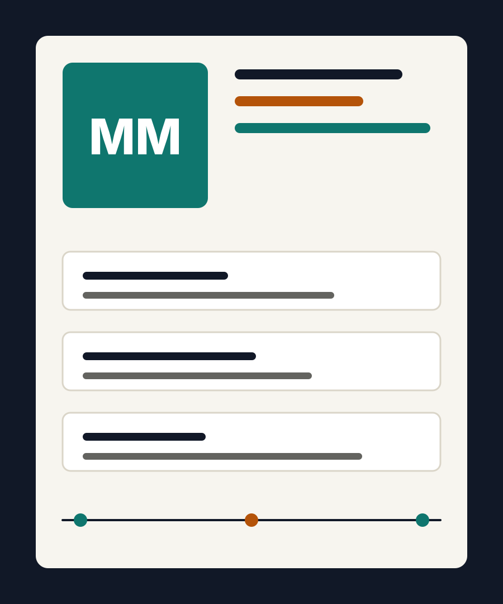

Dashboard für lokale Betriebe
Ein schlankes Reporting-Tool mit Kennzahlen, Filtern und klarer Darstellung für schnelle Entscheidungen.
GitHub ansehenPortfolio
Hi, ich bin Max. Ich entwickle Websites, kleine Tools und saubere Interfaces mit Fokus auf Verständlichkeit, Geschwindigkeit und Alltagstauglichkeit.

Auswahl
Ein schlankes Reporting-Tool mit Kennzahlen, Filtern und klarer Darstellung für schnelle Entscheidungen.
GitHub ansehenEine schnelle OnePage-Seite mit Projektgalerie, Kontaktbereich und sauberer mobiler Darstellung.
GitHub ansehenEin kleines Skript, das Daten prüft, normalisiert und für weitere Auswertungen vorbereitet.
GitHub ansehenProfil
Ich arbeite gern an Projekten, bei denen Technik nicht im Weg steht, sondern Dinge einfacher macht. Mein Schwerpunkt liegt auf Frontend, Struktur, Automatisierung und verständlicher Kommunikation.
Kontakt